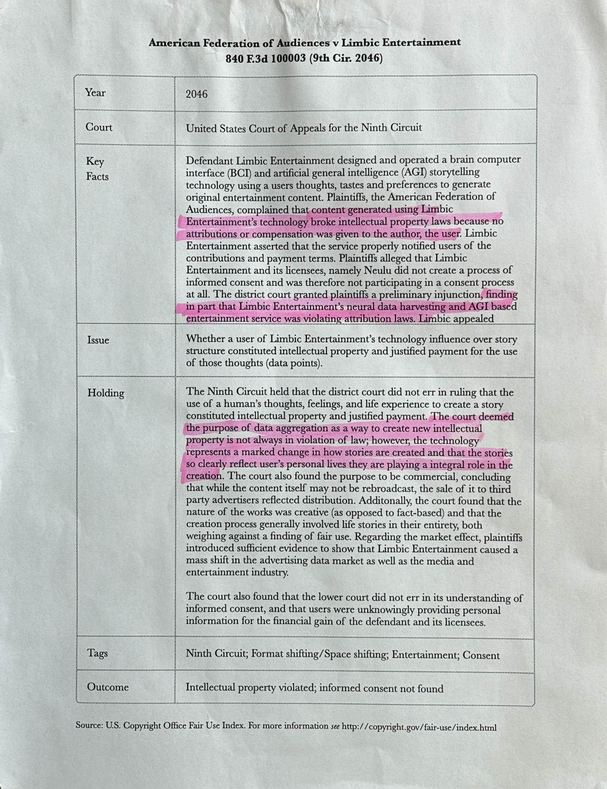
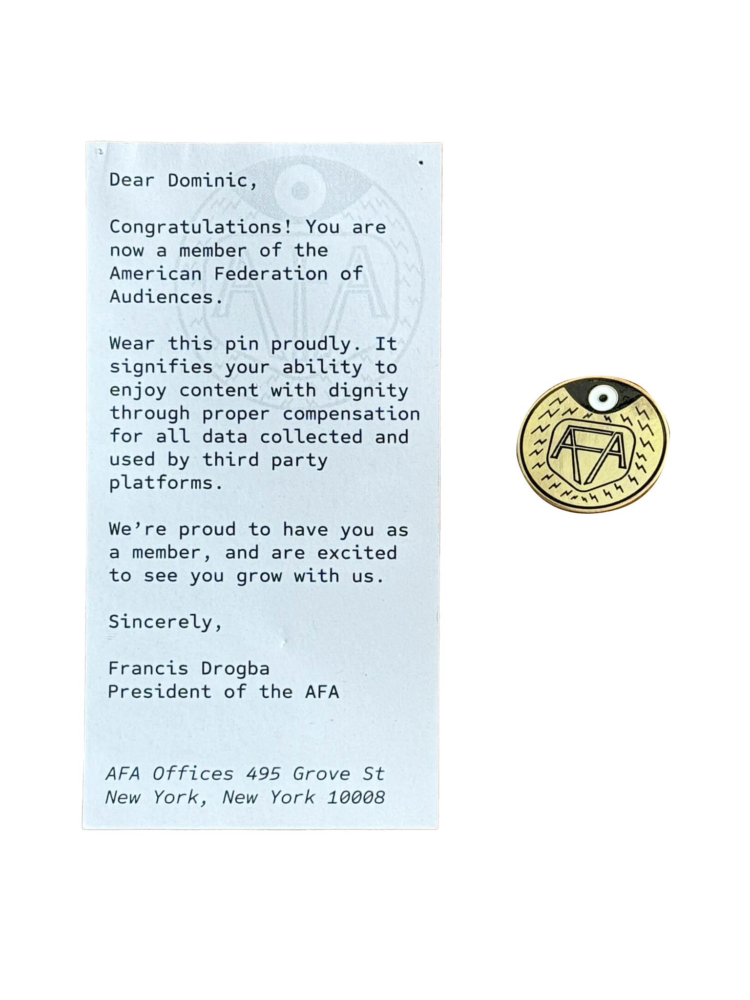

Limbic
Limbic_TestingVideo.mp4
LBC_Patent_Pg1.jpg

LBC_Patent_Pg2.jpg

LBC_Patent_Pg3.jpg
SS_Explained.mp4
LBC_moments.mp4
Neulu
NLU_moments.mp4
NLUPatch.jpg
NLU_Packaging.jpg
NLU_PackagingFront.jpg
NLU_PackagingBack.jpg
NLUThumbnails.jpg
NLU_AdGrafitti.jpg
American Federation of Audiences
AFA_moments.mp4

AFA_CourtDoc.jpg
AFA_AD.jpg>

AFA_pin.jpg
AFA_stickers.jpg
AFA_Payment.jpg
AFA_Vivify.jpg
Cine46
C46_Video.mp4

C46_NewsCoverage.mp4

c46_BCIkit.jpg
C46_moments.mp4
c46_stencil.jpg
c46_tickets.jpg
c46_manifesto.jpg
Article and Notes
Hoo_Email.jpg
Hoo_Article_pg1_v2.jpg
Hoo_Article_pg2_v2.jpg
Hoo_Article_pg3_v2.jpg
Hoo_CorpDiagram.jpg
Hoo_EntEras.jpg
Hoo_Timelinepg1.jpg
Hoo_Timelinepg2.jpg